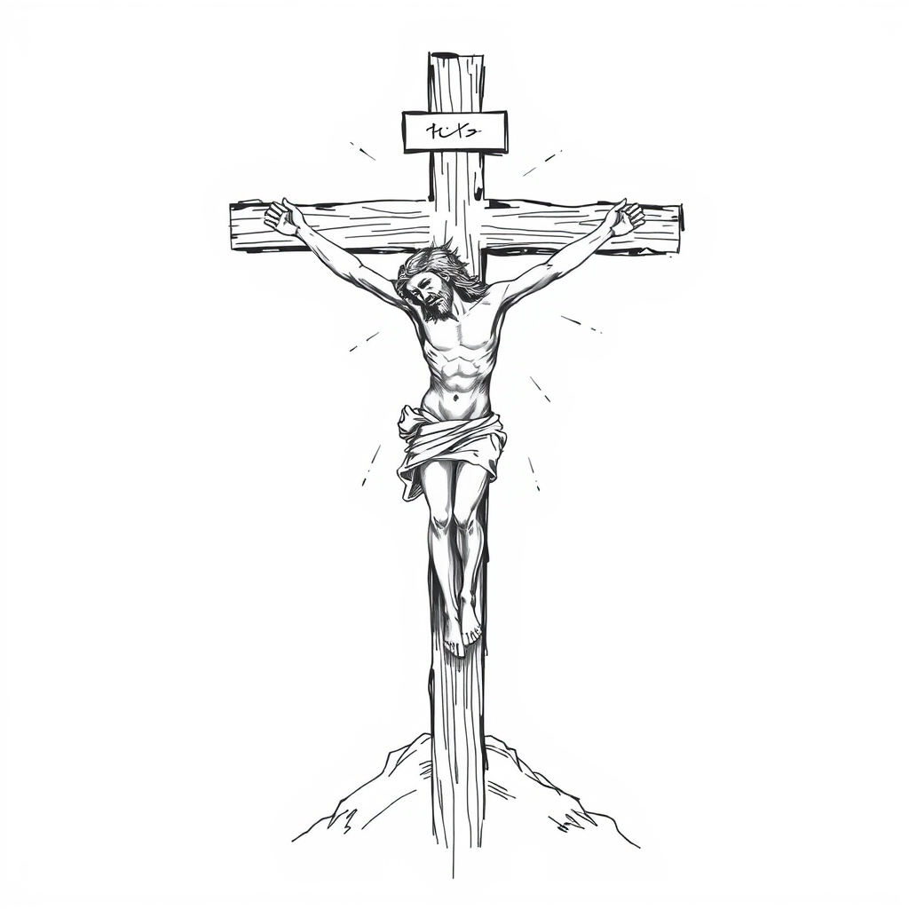
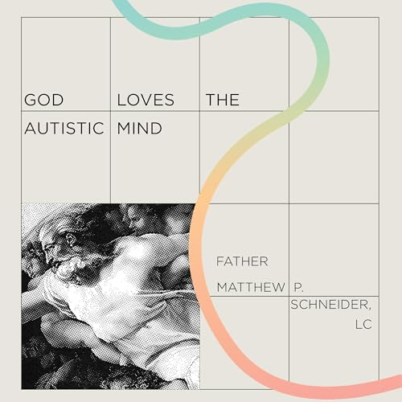
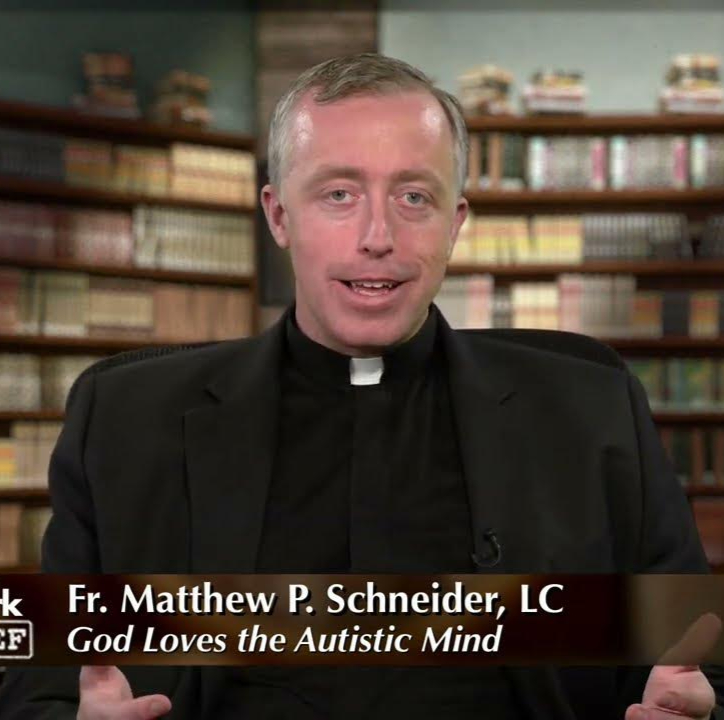

Faith, Ritual, and the Autistic Mind
A book recommendation, and why I make it
Individuals with high-functioning Autism are naturally curious. Many have a deep desire to understand the most complicated questions of life: what is our purpose, who am I, where did we come from. These questions have many answers from many people.
Fundamentally, I believe these are religious questions. Others call them existential, spiritual, philosophical, or political questions. Whatever name you have for it, we are all talking about the same thing — the questions about the inner life.

I am Roman Catholic. The Catholic Church is infamous for its stable, cookie-cutter Masses. They are the same in the United States, Costa Rica, and Taiwan. The structure and rituals are negotiated and announced in advance. All the movements can be practiced beforehand.
This predictability and structure makes the Catholic Church a meeting point for many individuals seeking stability in an unpredictable world. While the Church has many mysteries, it also has 2,000+ years of reasoning from the brightest minds of human history. From Aristotle to St. Thomas Aquinas, there is enough theology and philosophy to keep an excited brain searching for a lifetime (and an eternity).
However, it all begins with prayer. For those autistic individuals curious about a spiritual life, I offer this book: God Loves the Autistic Mind by Father Matthew P. Schneider, LC.


Fr. Matthew is an autistic priest with a blog at aspiepriest.wordpress.com.
In his book he offers a reconciliation between Autism, God, prayer, ableism and the church. He proposes unique forms of prayer, and argues for why the church and God need autistic people.
It is vivid, with personal stories and tough questions. I strongly recommend it.
Schneider, M. P. (2022). God loves the autistic mind: Prayer guide for those on the spectrum and those who love us. Pauline Books & Media.